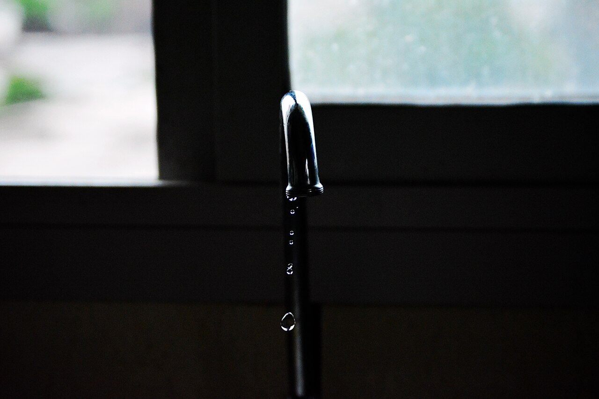
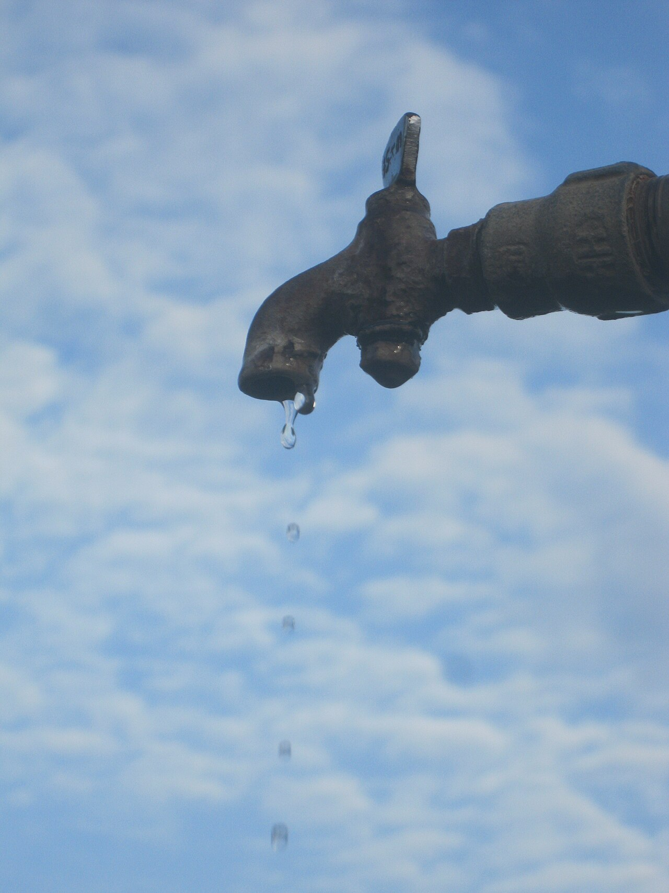
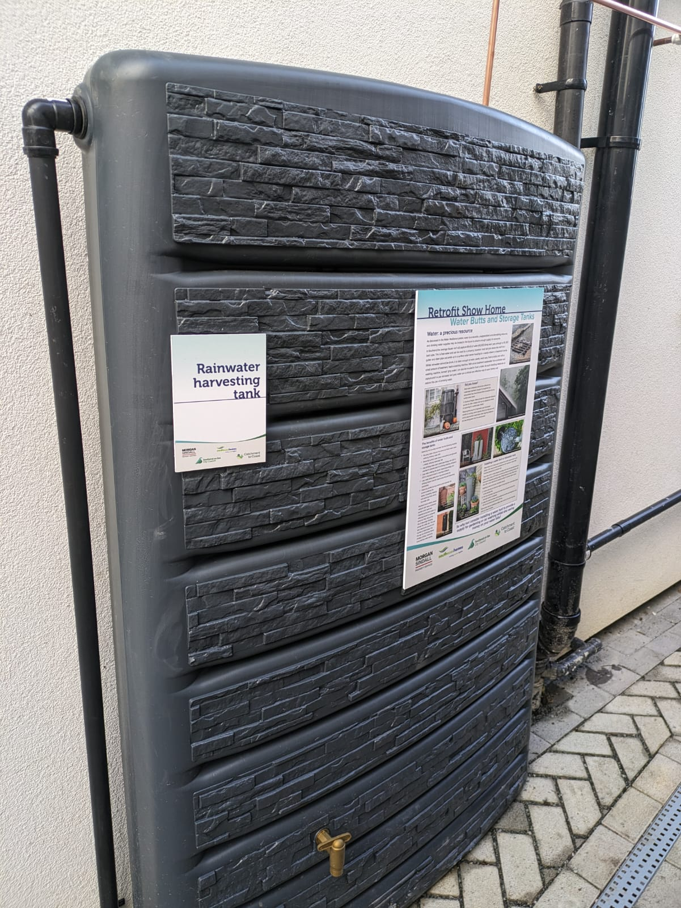
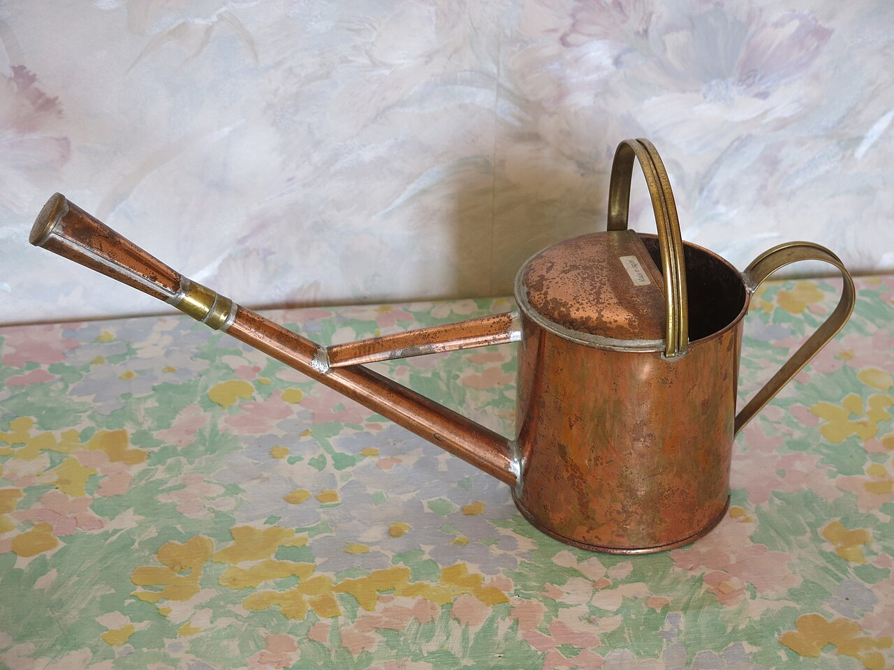

We can't build pipelines, but we can stop wasting the water we have.
Understand who is missing safe water and why it matters.
Use our calculator to see your own daily water use.
Pick one habit below and share this site with your family.
Click a card to find out more.

Leaving the tap running while brushing wastes about 5 litres every time. Turn it off and use a mug.

A tap that drips all day can waste many litres. Tell an adult and get the washer fixed.

A tank connected to the roof pipe stores rainwater for gardening, washing cars and cleaning.

Use water from washing vegetables or the RO purifier for plants and mopping floors.